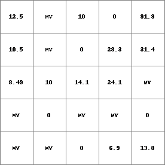
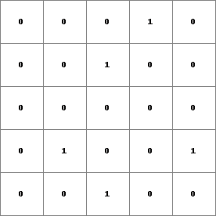
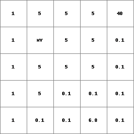
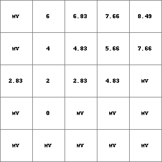
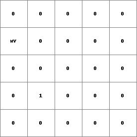

ldddist¶
ldddist
Friction-distance from the cell under consideration to downstream nearest TRUE cell
Result = ldddist(ldd, points, friction)
- ldd
- spatial ldd
- points
- spatial boolean
- friction
- spatial, non spatial scalar
- Result
- spatial scalar
Options¶
--unittrue or --unitcell
- --unittrue
- distance is measured in true distance (default)
- --unitcell
- distance is measured in number of cell lengths
Operation¶
points Is a Boolean expression where 0 is FALSE and 1 is TRUE. For each cell, the friction-distance over a friction surface is calculated of the path over the local drain direction network on ldd to the first downstream cell which is TRUE on points.
For each cell, the path starts at the centre of the cell itself. The path is a route over the consecutive neighbouring FALSE points cells in downstream direction, where the direction is specified by the local drain directions on ldd. The friction-distance increases while following the path starting with a friction-distance of zero. The amount of increase per unit distance is specified by the values on friction. Using these values, increase of friction-distance when travelling from one cell to its first downstream cell is calculated as follows: Let friction(sourcecell) and friction(destinationcell) be the friction values at the cell where is moved from and at its first downstream cell where is moved to, respectively. While moving from the source cell to the destination cell the friction-distance increases with:
distance x {(friction(sourcecell)+friction(destinationcell)}/2
where distance is the distance between the centre of the sourcecell and the centre of the destination cell. This distance equals the cell length if the source cell and the destination cell are neighbours in horizontal or vertical directions; it equals sqrt(2) multiplied by the cell length if the cells are neighbours in diagonal directions.
For each cell its path is followed in downstream direction until a TRUE cell on points is reached. The friction-distance covered at the centre of this TRUE cell is assigned to the cell where the path started and saved as Result. If no cell is crossed which is TRUE on points a missing value is sent to the cell where the path started.
Notes¶
The values on friction must be larger than zero. For cells which are TRUE on points the friction-distance is zero and a 0 is assigned to Result. If a cell has a missing value on ldd, points and/or friction, a missing value is assigned to the corresponding cell and to all its upstream cells on Result.
Group¶
This operation belongs to the group of Neighbourhood operators; local drain directions
See Also¶
Examples¶
- • pcrcalcbindingResult2 = Result2.map;Ldd2 = Ldd2.map;Points2 = Points2.map;FrictMat = FrictMat.map;initialreport Result2 = ldddist(Ldd2,Points2,FrictMat);• pythonLdd2 = readmap(“Ldd2.map”)Points2 = readmap(“Points2.map”)FrictMat = readmap(“FrictMat.map”)Result2 = ldddist(Ldd2,Points2,FrictMat)
Result2.map Ldd2.map Points2.map FrictMat.map  
  - • pcrcalcbindingResult1 = Result1.map;Ldd2 = Ldd2.map;Points = Points.map;initialreport Result1 = ldddist(Ldd2,Points,1);• pythonLdd2 = readmap(“Ldd2.map”)Points = readmap(“Points.map”)Result1 = ldddist(Ldd2,Points,1)
Result1.map Ldd2.map Points.map 
